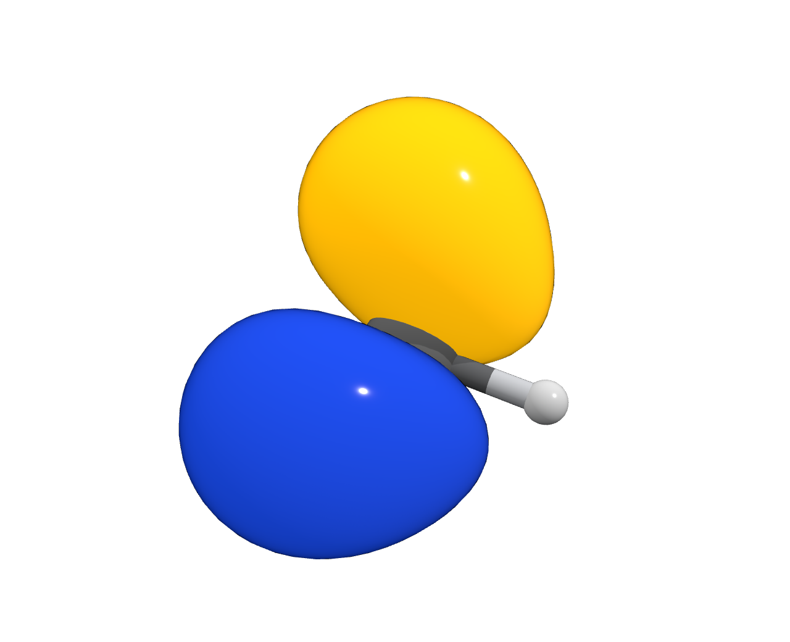
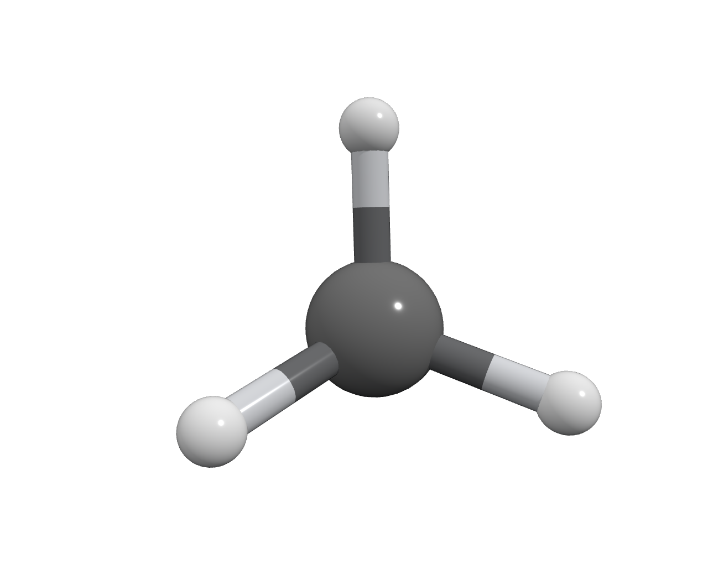
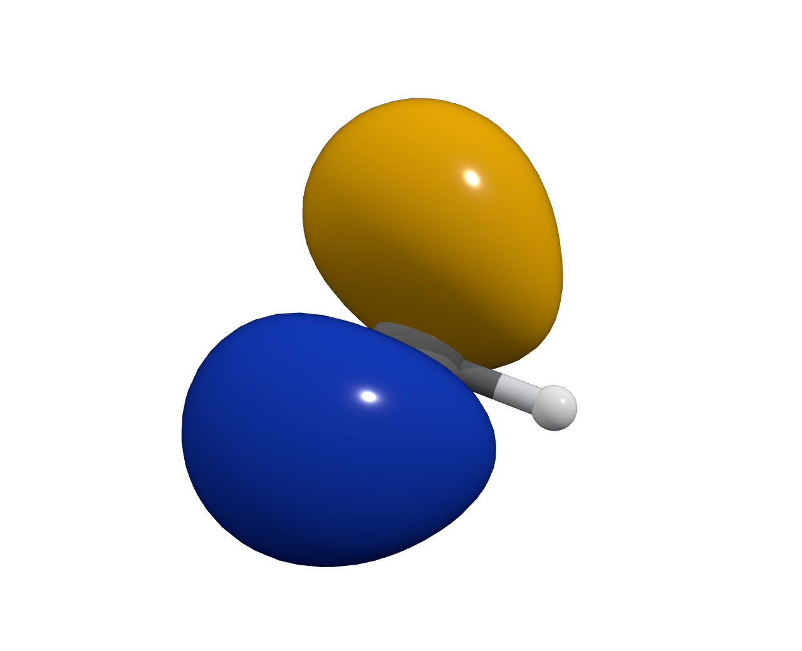
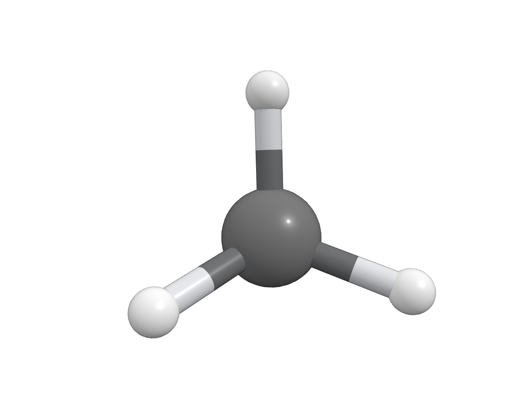
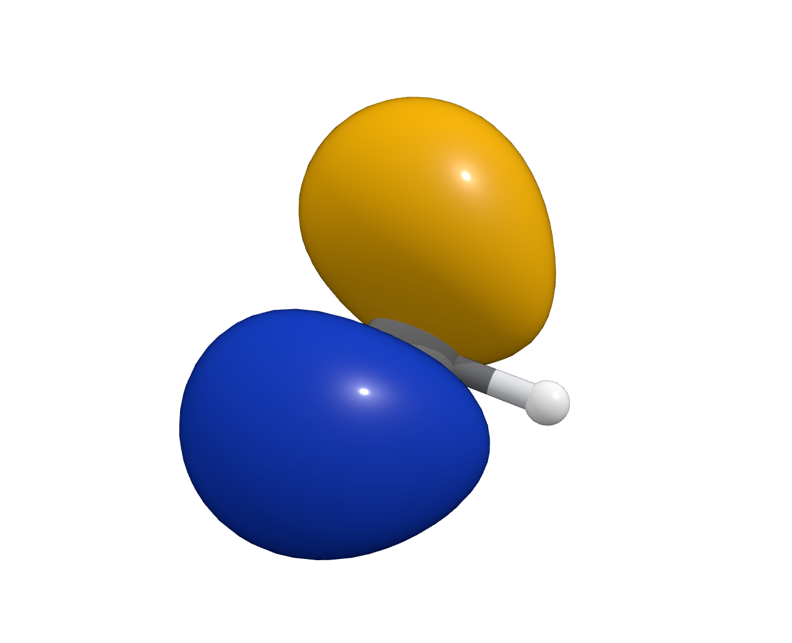
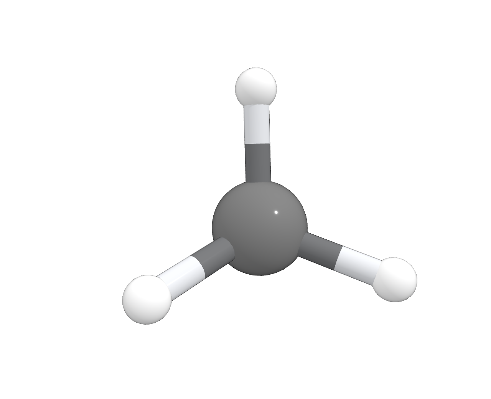
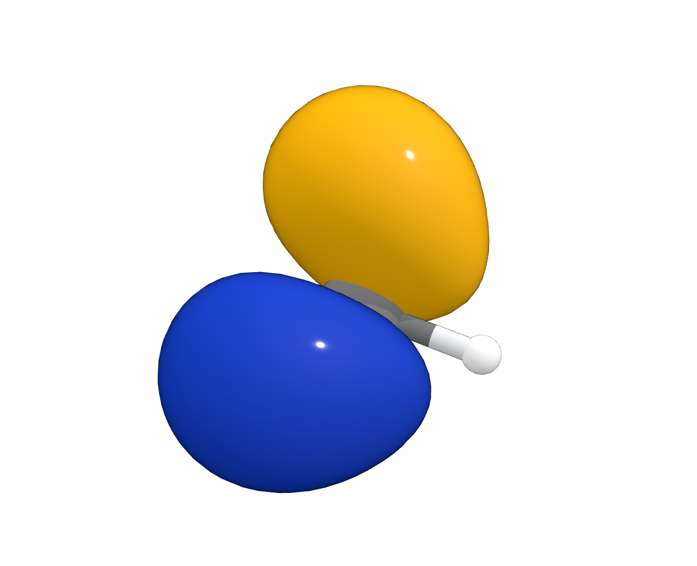

Original Basic
Two finishes · reference
Polished atoms, plus a separate luminous finish for orbitals.
VibeMol · Basic material study
Actual VibeMol renders. Basic geometry, colors, lighting, and shadows are identical across the options.

Polished atoms, plus a separate luminous finish for orbitals.


The original atom finish everywhere. Orbitals have deeper shading and rounded highlights.


A little color fill softens shadows; a clearcoat keeps both atoms and orbitals shiny.


Brighter orbital colors and compact highlights. White atoms lose some depth shading.
Download a material, then use Properties → Look → Material → Save material → Import. Material imports preserve the current geometry and lighting.
Opening a separate preview leaves your workspace unchanged.
| Finish | Roughness | Metalness | Clearcoat | Coat roughness | Color fill |
|---|---|---|---|---|---|
| Original atoms / A | 0.16 | 0.08 | 0.82 | 0.12 | 0 |
| Original orbitals | 1 | 0 | 1 | 0.10 | 0.80 |
| B · Balanced | 0.38 | 0.04 | 0.90 | 0.10 | 0.12 |
| C · Luminous | 0.72 | 0.04 | 1 | 0.10 | 0.36 |
All candidates use Three.js physical materials with zero environment reflections, no transmission, and 100% surface opacity. Each candidate uses one identical descriptor on all three targets. No per-element or surface-specific material rules are added.
The included methane canonical orbital 4 is rendered at ±0.06 in the cube's scalar units. The molecule views hide the same orbital and zoom in. Within each view, coordinates, camera, geometry, phase colors, shadows, and lighting are fixed. Basic now uses C · Luminous for atoms, bonds, and orbitals. The original recipe remains here as a historical reference.